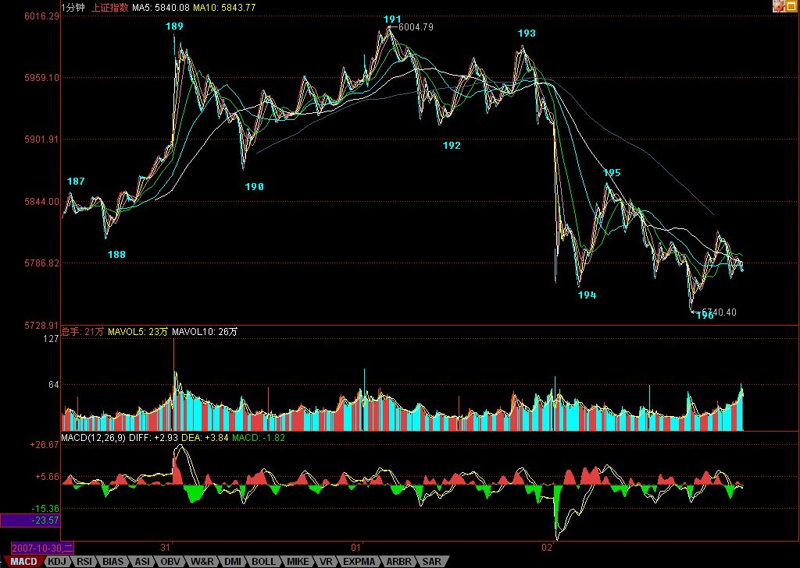

今天的走势同样极为教科书，因此，复制了图，可以认真研究一下。针对189-192的1分钟中枢，195是第三类卖点，但对于191开始的线段类下跌，194-195是第二个类中枢，所以后面的跌破，力度不够，出现明显背驰，然后就必然要在这个位置出现一个新的1分钟中枢。
下面的走势很简单，这个新的一分钟中枢是否继续向下延伸出新的1分钟下跌走势，也就是这1分钟中枢是否有第三类卖点。而从大的方面看，这次反弹的调整，级别将至少向5分钟级别扩展。
当然，操作上第一个中枢的第三类卖点在该级别中是最后的走人机会，后面的都没意义了，也就是说，对于这次调整的逃避，191是第一类卖点，因为前面线段类上涨走势出现类背驰，而193是第二类卖点，因为站在线段的角度，就是第二类卖点，而站在189-192的1分钟中枢震荡的角度，任何的次级别离开，都将先构成卖点，然后再考虑是否回跌形成第三类买点的回补机会，这是中枢震荡的操作方法。
195以后，针对这个调整来说，任何的卖出，都是太晚了，这意味着随时面临下跌走势的结束。很多人喜欢在第二个中枢才考虑第三类卖点，那是晚之又晚，所以经常卖了，就被反转夹空，那是一点都不奇怪的。当然，很有可能卖了以后继续延续下跌，但这已经是一个概率问题，而不是一个能被理论100%保证的技术问题了。
好了，技术的课程就不说了，今天的大盘，受外围影响，走得还算不太坏，最主要，关于周末加息的消息，也到处传，所以对心理是有压力的。但下周无论加息与否，真正的主角都是中石油。如果该股过分高开，形成比较恶劣的走势，将对大盘有较大影响，此外，今天不少资金出逃，就等着恶炒一把石油，下周，就看这场大戏，最终是喜剧、悲剧还是闹剧了。
周末，好好休息，下周看戏去。是否成为剧中的一员，就看自己的能力了。千万别强求，强求没幸福。
